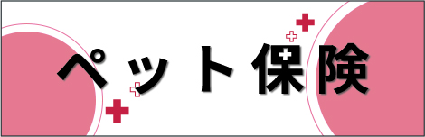

当院について
診察時間
| 時間 | 月 | 火 | 水 | 木 | 金 | 土 | 日 | 祝 |
|---|---|---|---|---|---|---|---|---|
| 9:00～13:00 |  |
|
|
|
|
|
|
|
| 14:00～20:00 | |
|
 |
|
|
|
|
|
勤務表
獣医師
看護師
トリマー
クレジットカード・各種保険

内科
- 循環器
- 呼吸器
- 消化器
- 内分泌
- 血液・免疫
- 腎・泌尿器
- 神経
- 皮膚
- 腫瘍
- 眼
外科
去勢手術・避妊手術
その他軟部外科
※詳細につきましては直接お問い合わせください。
手術の流れ
避妊手術の場合、開腹手術のため一泊入院を行います。可能であれば、飼い主様の匂いがついているタオルやブランケット、毛布など安心のできるものをお持ちください。
また、お食事もご持参いただければそちらを入院中に出すことが可能です。
歯科
- スケーリング(歯石除去)
- 抜歯
日常ケア
- 爪切り
- 足裏バリカン
- 肛門腺しぼり
- 日常ケア
- 耳掃除